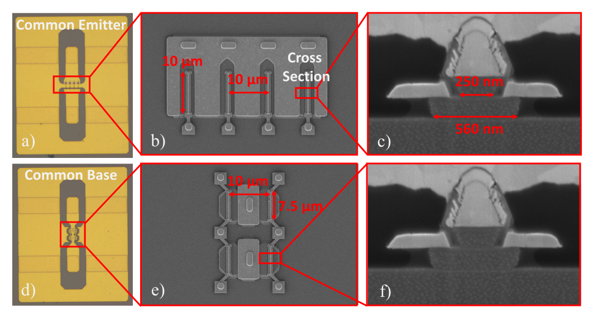
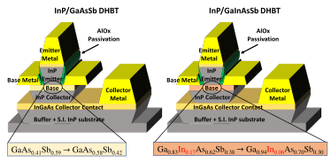

Device
Development
I design and fabricate InP-based heterojunction bipolar transistors for millimeter-wave power amplifiers. My work covers epitaxial structure design, device layout, and process development, with a focus on power density, efficiency, and breakdown voltage. I use optical and electron-beam lithography, dry etching, and thin-film deposition to translate designs into devices. Results include 14.5 dBm output power at 94 GHz and 35% power-added efficiency at 170 GHz.
Selected Publications
High Power InP/Ga(In)AsSb DHBTs for Millimeter-Wave PAs IEEE Journal of Microwaves · 2022 ↗Multi-Finger 250-nm InP/GaAsSb DHBTs with Record 37.3% Class-A PAE at 94 GHz BCICTS · 2023 ↗Record 35% Power-Added Efficiency at 170 GHz IEEE MWTL · 2024 ↗Achieving Optimal Impact Ionization-Limited Breakdown Voltages in Scaled mm-Wave InP/GaInAsSb DHBTs IEEE TED · 2025 ↗
